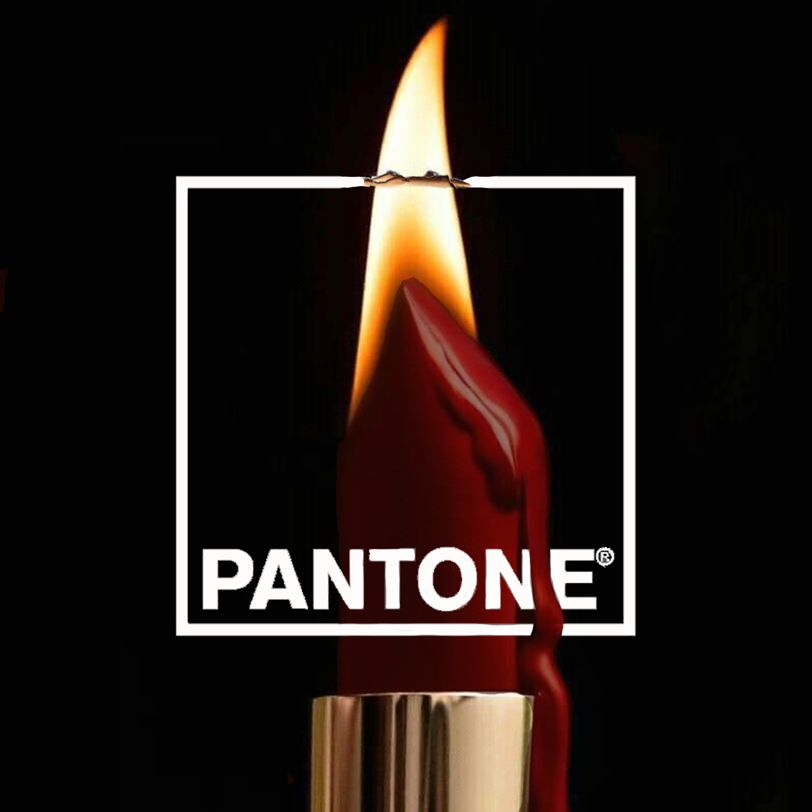
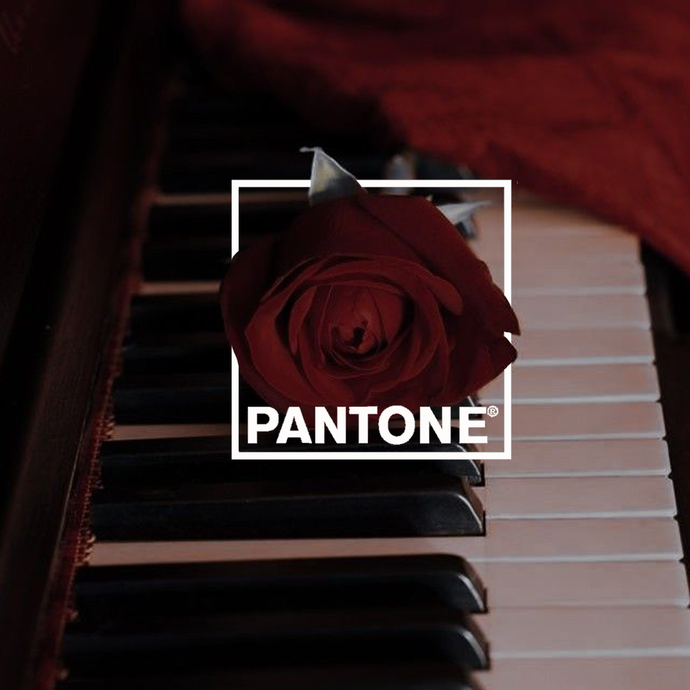
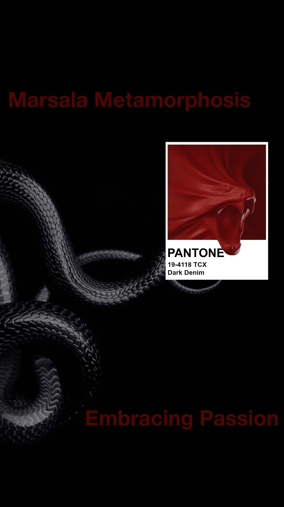
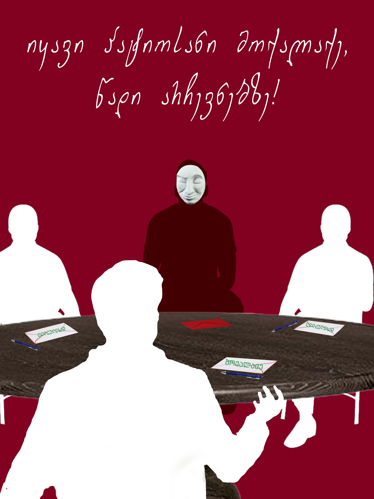

Ignite Passion With Marsala
I ignited passion in design, crafting a blazing statement with lipstick on fire in the mesmerizing hue of Marsala. Combining heat and elegance, I aimed to epitomize Marsala's romantic essence. The fiery lips symbolize the intensity and allure of this deep, red-brown shade, inviting viewers to feel the warmth and passion it exudes. In a mere stroke, the design conveys the sensuality and romance intrinsic to Marsala, igniting a visual flame that captivates the soul.

Write Your Lovestory in Marsala
I crafted a design intertwining roses on a piano in the rich hue of Marsala to evoke the color's romantic essence. The piano symbolizes harmony, while the deep, wine-inspired shade enhances the emotional depth. By merging the timeless beauty of roses with Marsala's warmth, I aimed to visually articulate the passionate and romantic undertones inherent in this captivating color, inviting viewers to experience its allure in a harmonious symphony of emotions.

Embracing Passion With Marsala
I chose to incorporate a snake design in the rich hue of Marsala to evoke the romantic essence of this captivating color. Marsala, with its deep red undertones, symbolizes passion and warmth. The sinuous curves of the snake intertwine with the color, symbolizing the enigmatic allure of romance. This design aims to convey the sensuality and mystery inherent in Marsala, inviting people to embrace the depth and emotional intensity it exudes.

Be An Honest, Proud Citizen and Vote
I crafted a voting poster inspired by the game Mafia to underscore the parallels between strategic decision-making in the game and civic responsibility. By blending the two, I aimed to emphasize the significance of being an honest citizen. Just as players must discern truth from deceit in Mafia, voters play a crucial role in discerning the best candidates for a thriving society. The poster serves as a playful reminder that, like the game, the stakes are high in real-life decisions, urging individuals to approach their civic duty with integrity and discernment.

Wherever You Are, Vote
I crafted a vibrant voting poster blending civic duty with urban playfulness. By portraying the act of voting as a city game, I aimed to convey the idea that participating in elections is a vital role every citizen plays. Just as in a game, honesty becomes a fundamental rule. The poster serves as a visual reminder that, like any game, democracy thrives when everyone actively engages, contributing to the collective success of our societal landscape.